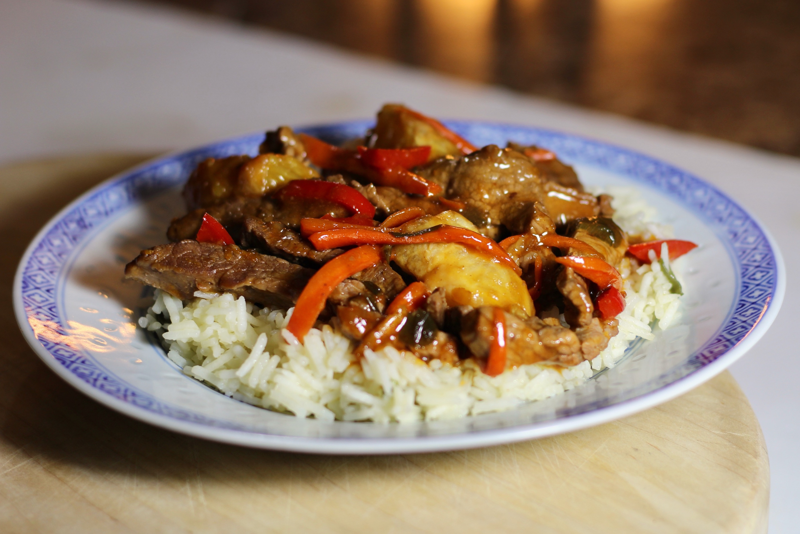

Sesame-Orange Beef and Veggie Stir-Fry

Description
This sesame-orange beef and veggie stir-fry is a flavorful
weeknight dinner that's sure to please the whole family!
Serves 4
Ingredients
- 3 oranges
- ¾ cup water
- ½ cup long-grain brown rice
- ¼ cup low-sodium beef broth
- 2 tablespoons low-sodium soy sauce
- 2 tablespoons chili-garlic sauce
- 2 tablespoons low-sugar marmalade
- 1 teaspoons toasted sesame oil
- ¼ teaspoon salt
- 1 tablespoon cornstarch
- cooking spray
- ¾ pound beef shoulder tender, cut into bite-size strips
- ¾ pound beef shoulder tender, cut into bite-size strips
- ½ tablespoon and ½ teaspoon vegetable oil
- 1 carrot, julienned into 2-inch pieces
- 6 green onions, bias-sliced into 2-inch pieces
- 1 large red bell pepper, cut into bite-size strips
- 6 cloves garlic, minced
- 1 tablespoon grated fresh ginger
- 1 tablespoon toasted sesame seeds
Steps
- Remove 1 tablespoon zest and 1/4 cup juice from 1 orange. Peel
and section remaining 2 oranges.
- Bring water and brown rice to a boil in a saucepan. Reduce
heat to medium-low, cover, and simmer until rice is tender and liquid
has been absorbed, 45 to 50 minutes.
- Stir together zest, orange juice, broth, soy sauce, chili-garlic sauce, marmalade, sesame oil, and salt in a small bowl. Whisk in cornstarch.
- Coat a wok or large nonstick skillet with cooking spray. Heat over medium-high heat. Stir-fry beef until browned, 2 to 3 minutes. Transfer to a bowl. Add vegetable oil and carrot to the wok; stir-fry for 3 to 4 minutes. Add green onions and bell pepper; stir-fry for 2 to 3 minutes more. Add garlic and ginger; stir-fry for 30 seconds more.
- Return beef to the wok. Stir cornstarch mixture, then add to the wok. Cook, stirring, until thickened and bubbling. Add orange sections; cook, stirring, for 1 minute more.
- Divide rice among 4 plates; top with beef mixture and sprinkle with sesame seeds.
Chef's Note
If you cannot find beef shoulder tender, choose another lean cut,m such as top sirloin.